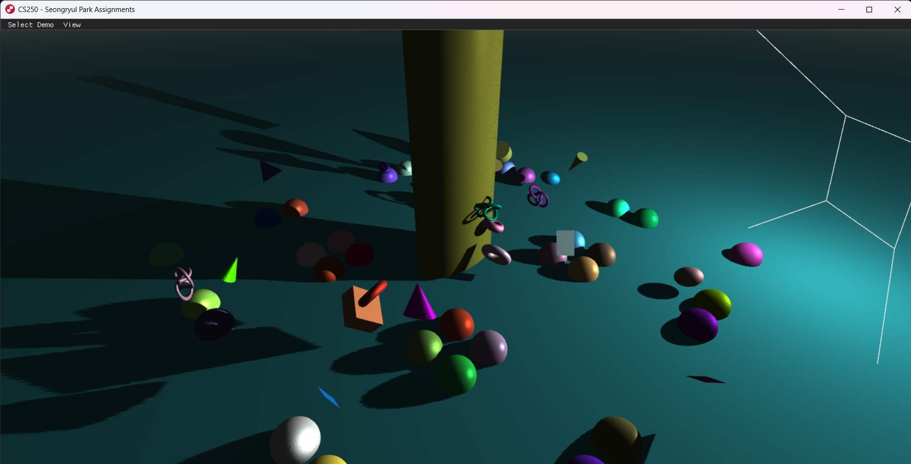

3D Graphics
Implement shadow mapping using a shadow map
Implemented depth texture creation for shadow mapping
Implemented camera view matrix and world transformation based on camea parameters
Implemented a framebuffer class to create shadow map
Implemented renderToDepthBuffer to make ashadow map and renderToScreen to apply shadow mapping during main rendering
Fragment Shader: Used textureProj for depth comparison and applied shadow into rendering
discussing any challenges faced and solution
What I learned from the experience